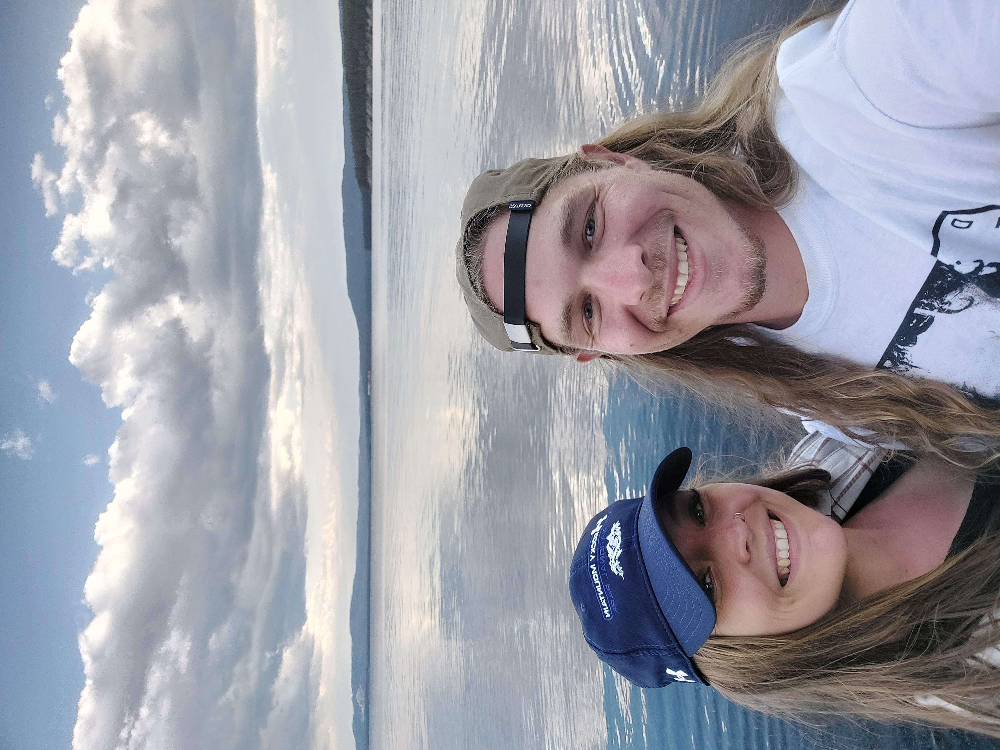

Triumph Street Triple 675r 4/9/2022

Two motorcycles later, I finally decided to step up to a larger bike. I was able to find a good deal on a pristine 2014 street triple. I intended to get a Yamaha MT07 but the guy I was trying to buy it from backed out, and luckily, I came across this while browsing marketplace. The street triple is (in my opinion) the greatest standard/naked style motorcycle on the market and I thought it would be a bike I would get later on due to the price. I still can’t believe that I found one just above my price range in such good condition. I couldn’t pass it up, and I’m glad I didn't.
12 bar installed! 2/27/2022

If you don’t remember, I bought a Honda Grom about nine months ago to replace the KTM I blew up (RIP). I’ve been waiting on this sub cage/12 bar to come in for two months, which I guess is to be expected for a custom fab. I wanted a low profile one, so I got the shorty, so it’s actually a 1’oclock bar and not a 12. It has already come in handy a couple of times due to my awful wheelie skills, but that’s why I got it. It bolts up where my old plate holder was, so I just zip tied the plate to the bottom of the bar, which I’m pretty sure is legal.
Yellostone Trip 3/6/2016
I just got back from my trip to Yellowstone and the Grand Teton National Park with my wife and parents. We flew into Jackson Hole and spent four days exploring the Grand Teton before driving up to Yellowstone for the remainder of our trip. While I did enjoy Yellowstone, we had a lot more fun in Jackson as the hiking was better and it seemed a bit less touristy. I swear I could hike for hours in those mountains, and one of these days I’m going to return to backpack up one of the peaks in Grand Teton.
Awesome blog post title 3/6/2016

I’m back with another new record! My copy of Sleep’s ‘Holy Mountain’ was waiting for me at the door when I got home from work this afternoon. This album is one of my favorites and I couldn’t wait to have such a classic doom metal album in the collection. I fell in love with this subgenre when my friends brother showed me the song ‘Dragonaut’ from this album a couple of years ago. It’s very slow, but super heavy, with some obvious influence from Black Sabbath’s early work, specifically ‘Master of Reality’. Just a solid album all around.